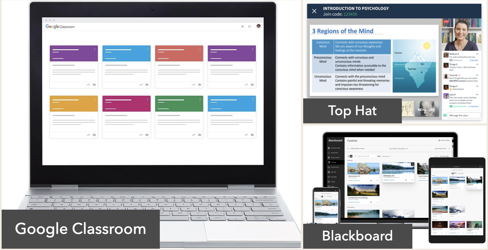
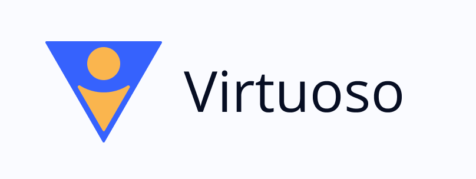
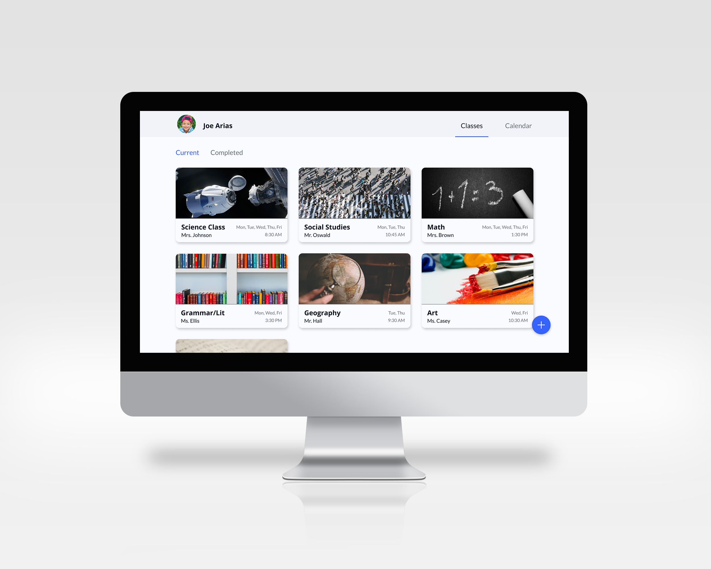

Virtuoso
Case Study
Remote Learning is a familiar topic for adults looking to gain new skills. With the severe social impact of the Coronavirus, children were told to complete the school year from the safety of their homes. I looked to build a site that children and teachers could quickly adapt to and continue learning with ease.
Deliverables
User Research
Branding & Identity
Hi-fi Mockups
Working Prototype
Tools
Figma
Invision
problem.
By staying at home and learning online, children were missing out on an important part of the educational experience: socializing. Many users of remote learning complain about feeling isolated.
Most online learning platforms were built to supplement in-classroom learning, not replace it. They simply don’t have enough features.
solution.
Allow students to discuss and share ideas in classroom discussions and assigned groups.
Providing the right features for teachers and students can effectively replace in-classroom learning.
Jump to section
research.
Survey Results
I conducted a survey on people's experience with remote learning, to understand what our product should focus on and what pitfalls we can address in the current market. Here are some of my results:

71% of users said they used a desktop/browser to access remote learning, as opposed to mobile apps.

81% of users agreed that live video calling, pre-recorded lessons, and feedback on work were necessary.
I gave participants a space to write any frustrations they experienced while using remote learning. I then sorted their responses into 3 main categories to address:
-

No live teacher interface
-

Feeling isolated
-

Lack of structure
Competitive Analysis
I researched Google Classroom, Blackboard, and Top Hat, 3 sites that promise to supplement or replace in-person learning.
I realized these apps were mainly targeted at universities. Also, the target audience were school administrators, not teachers, since admins would be the ones buying the app for teachers to use. I decided to build an app directed at teachers for use in elementary through high school.
View Competitive Analysis
information architecture.
User Stories
With my current research, I thought about what features I wanted to put in my app, and how users might view them. I created a lot of user stories, but ended up with just a few labeled as "high priority". I used these to begin building my minimum viable product.
| As a teacher, | I want to start a class |
| As a teacher, | I want to view attendance |
| As a teacher, | I want to group students up to work together |
| As a student, | I want to view my assigned work |
User Flows
To take it a step further, I wanted to map out the processes behind these stories. By doing this, I was able to build on my ideas and turn them into actionable features.

View User Flows
Wireframes
I spent most of my time in this stage. I looked back at the other remote learning platforms from my competitive analysis to see how they are designed: what works and what doesn’t. On top of that, I found designs for calendars, classes, and discussions on dribbble and pinterest. Using these resources, I incorporated my own ideas to build the wireframes of my site.

View Desktop Wireframes
View Mobile Wireframes
branding.
Logo
The word 'virtuoso' means a highly skilled individual in an artistic pursuit. It comes from the Italian language, where it means learned or skillful. The name also resembles “Virtual” for virtual classroom. The shape resembles a V and a person. The person represents every student who signs up and learns through our service. The corners are rounded, to make the logo seem friendlier.
Color and Typography
I chose blue as the main brand color to represent trust and security. As a contrasting color, I decided to go with orange, which represents friendliness and creativity. These brand colors represent what is missing from the other remote learning options available.

I chose Open Sans as the main font because it works with a lot of different fonts, is versatile, and looks friendly. Lato is my choice as a complementary font. The difference in size and weight will be used to organize information.
Hi-Fi Mockups
With branding finalized, I began designing the Hi-Fi Mockups. There were a few stages of redesign throughout the process, after receiving feedback from senior designers and completing preference tests.

testing.
Preference Testing
With branding finished, I began designing the Hi-Fi Mockups. There were a few stages of redesign throughout the process, after receiving feedback from senior designers and completing preference tests. In the first preference test, I examined how to organize the top navigation bar. Which do you like better?

Between these two options, the bottom one won. I believe it won because it is simpler, easier to understand, and takes up less space.
Usability Testing
I held some usability tests in-person and remotely. It’s easiest to gather information and understand the user experience from in-person testing, but I was able to gather more responses from people remotely. I gave users 4 tasks to complete on my site: Check your class schedule, Join a new class, Submit the assignment that is due today, and Attend a class’s live virtual classroom.
Final Changes
From these tests, I was able to figure out what wasn't working and make some final changes.
-
Change the color of the action button to blue
-
Use a colored bar in naviagtion to show which page the user is currently on
-
Move the "Due Today" alert closer to the top of an assignment
I’m excited about the end result. I believe it can become an effective tool for teachers and students to continue their education in any situation.

further refinements.
I revisited this project and added microinteractions to give my design more life. To do this, I used Figma's "Smart Animate" function. There are a few advantages to including microinteractions in an app. Some apps use them to save time for their users, while others use them to show their branding. I decided to use microinteractions to communicate information and engage users.

A simple interaction like this is more engaging than navigating between static menu and input screens. When users hover over separate buttons, a display appears that describes what that button will do. This will help users understand how to use the site quickly. Finally, once the user selects an action, the plus button moves up and becomes the "x" of the input field. All of these microinteractions give the user a more engaging experience while navigating the app.
conclusion.
As a minimum viable product, this project meets the requirements to enter development. I feel confident that Virtuoso could open up possibilities for teachers and students who are currently participating in remote learning, for any reason. I’ve learned how important user testing is, as it gives me a way to view my project through fresh eyes.
In future projects, I will use user testing earlier in the process, starting with wireframes. This project has taught me that the design process is not a linear journey, it includes circling back to different stages of research and testing throughout. I am happy with how this turned out and eager to start on my next project!
